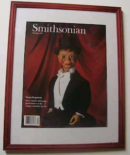

Okay, now it's your turn!
3/25/2010
{kind=link}

This framed 1993 Smithsonian cover has been awarded by drawing twice and has gone unclaimed both times. Those two winner's loss could possibly be your gain. It's beautiful; an original (not a copy). I have now collected your one-time entires for this piece. A special drawing will be held over the weekend with winner to be anounced Monday. My thanks all of you who entered this special drawing - I'm only sorry I don't have more of these!
Thanks to Bob Abdou I have a mint condition copy of this same magazine, still in its original wrapper. It will be given away Monday as well, with the winning name being drawn from from the full general pool of registrants.
Of this cover, Smithsonian's editor wrote, on page 2:
"Just 36 inches tall, sassy Charlie McCarthy was a giant of an entertainer. Edgar Bergen, his creator and voice, drew up Charlie's features in 1922, took the sketch to woodcarvers - and the rest is showbiz history. Today Bergen's daughter, Candice, star of TV's 'Murphy Brown', says, 'A lot of the spirit of Murphy is similar to Charlie's - irreverence, fearlessness. I sometime do a chuckle that reminds me of his.' Her childhood feelings toward Charlie? 'The image of a buzz saw must have crossed my mind on occasion.' Visitors can see Charlie, splinters and all, at the National Museum of American History. Photo by Theo Westenberger."